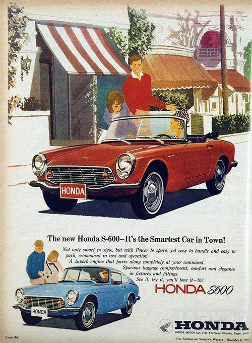
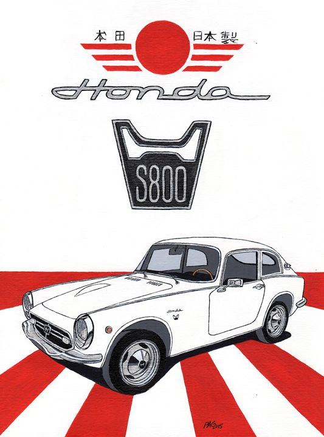

SEPTEMBER 6, 2021
Honda S600: The car that started it all
We've all heard of the S2000 and what a gem of a car it is to drive. But not many of us might know that the S2000 is merely a nod to the S600. A tiny sports couple from the 60s that was emblematic of the rev-happy nature of today's revered K-series engines.
The S600 debuted at the Tokyo motor show in the early 1960s and was something of a shocker for all the viewers. Here was a car that had a 600cc motorcycle engine that was plonked into it's engine bay! How could this ever work?
The car was no slouch though. With a redline at north of 10,000rpm, it holds the record for the highest-revving production engine in a car, ever. That's a record that it holds even today.
READ MOREOCTOBER 18, 2021
Honda S800: Building on top of a successful formula
Once the S600 went out of vogue, Honda updated the line by introducing a variant with 200 extra CCs, but kept pretty much everything else. The result? The show-stopping S800 that is a collector's favorite, even today.
The S800 debuted at the Tokyo motor show in the early 1980s and was something of a shocker for all the viewers. What's Honda thinking? Same car with a slightly different chassis and a bigger engine is hardly going to cut it in the 80s.
But it did, it 'cut it' and then some. And the rest as we know, is history.
READ MORE